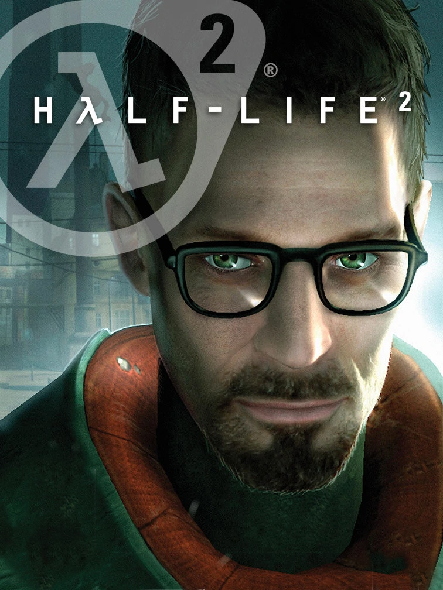

Half-Life 2
Half-Life 2
Detalhes
|  | |
| Tempo de jogo | Não Jogado |
| Última Atividade | Nunca |
| Adicionado | 11/02/2025 13:17:42 |
| Modificado | 11/02/2025 13:46:26 |
| Status de Conclusão | Not Played |
| Biblioteca | Steam |
| Fonte | Steam |
| Plataforma | PC (Windows) |
| Data de Lançamento | 16/11/2004 |
| Pontuação da Comunidade | 91 |
| Avaliação da crítica | 79 |
| Pontuação do Usuário | |
| Gênero | Shooter |
| Desenvolvedor | Valve |
| Editor | NVIDIA Lightspeed Studios Sierra Entertainment Valve |
| Funções | Single Player |
| Links | Steam Wikipedia Official Wikia YouTube Twitch |
| Tag | |
Descrição
A Guerra das Sete Horas foi perdida. A Terra se rendeu. O incidente em Black Mesa já é um passado distante. O jogador novamente pega o pé de cabra do pesquisador Gordon Freeman, que se encontra em uma Terra invadida por alienígenas, os seus recursos esgotados e a sua população diminuindo. Freeman assume o nada invejável papel de resgatar o mundo dos males que ele libertou em Black Mesa. E muitas pessoas queridas estão contando com ele.
Half-Life 2 é o jogo de tiro em primeira pessoa que serviu como ponto de referência e "foi o arcabouço para a próxima geração de jogos" (PC Gamer). Experimente uma campanha empolgante recheada de níveis sem precedentes de exposição imersiva ao mundo, uma física que desafia os limites e combates alucinantes.
Inclui as expansões Episode One e Episode Two
A história do Half-Life 2 continua em Episode One e Episode Two, duas aventuras completas de Half-Life ambientadas após o jogo base. Você pode acessá-las pelo menu principal, e ao completar cada história, você avançará automaticamente para a próxima.

Half-Life 2: Deathmatch
Um jogo multijogador frenético situado no universo do Half-Life 2! A física do HL2 adiciona uma nova dimensão às partidas mata-mata. Jogue um mata-mata tradicional ou forme uma equipe da Combine contra uma da Resistência. Jogue uma privada no seu amigo hoje mesmo! Acessível na sua Biblioteca Steam com a compra do Half-Life 2.

Oficina Steam
Jogue campanhas inteiras ou substitua armas, inimigos, elementos da interface e mais por conteúdos criados pela comunidade.